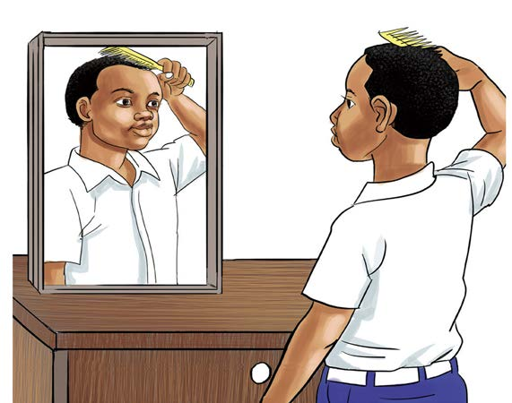

Figure 11: Formation of an image in a plane mirror
Activity 5
Investigating the reflection of light
Materials: Plane mirror, table and pen
Procedure
1.
Take a plane mirror and place it on the table, then look at yourself in the mirror.
2.
Take a pen and hold it in front of the mirror.
3.
Record the results of your actions. What did you discover from the observation you made?
When light rays hit smooth, shiny surface, they are reflected. The reflection of light rays causes the formation of image of an object or people in the mirror. For example, when you look in the mirror, light from a light source bounces off your body to the mirror. The mirror reflects the light back to your eyes, allowing you to see your image.